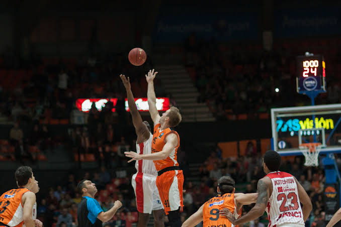
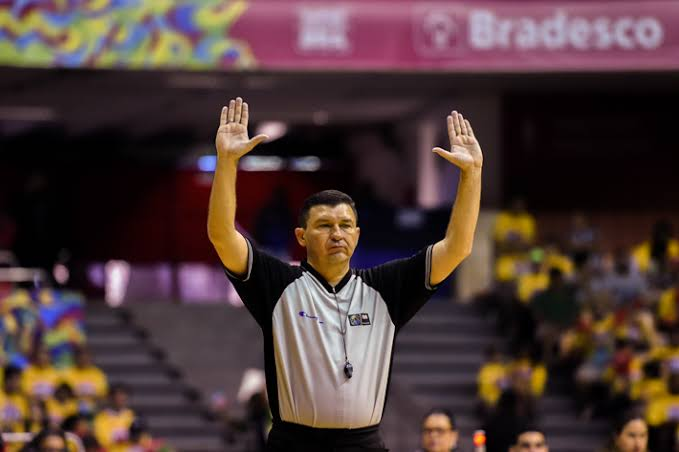
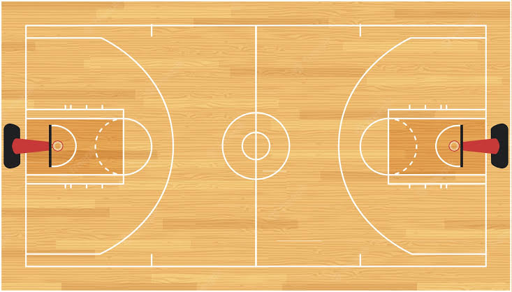

Explicando o basquete
O basquete é considerado um dos esportes coletivos mais famosos e praticados do mundo. Disputado entre duas equipes de cinco pessoas cada, o objetivo do desporto é passar a bola por dentro do cesto da equipe adversária. Pode ser realizado tanto ao ar livre, como em praças, parques e escolas.
O basquete é um jogo que demanda muita força nos ombros. Assim como a maioria dos esportes, é bom para prevenção de doenças cardiovasculares. E, não diferente de muitas modalidades, tem seus riscos de lesões. No caso dessa categoria, a propensão são lesões no punho e tornozelos.

Regras do basquete
O objetivo do basquete é introduzir a bola na cesta do lado adversário de forma a marcar pontos. Veja abaixo as principais regras:
- O Basquete é executado, preferencialmente, em uma quadra.
- São compostos por três árbitros que executam as regras do desporto durante a partida. A posse de bola é decidida com uma bola ao ar, lançada pelo árbitro.
- O desporto conta também com um marcador e um auxiliar para anotar o boletim do jogo, como o registro de marcação de pontos, faltas pessoais, etc.
- Conta também com o cronometrista, que tem a função de conferir o tempo de jogo e os possíveis descontos dados.
- O jogo é dividido em quatro tempos, cada um com dez minutos. Em caso de empates no final do jogo são admitidas prorrogações de até cinco minutos.
- Os pontos são contabilizados da seguinte forma: cada cesta de campo equivale a dois pontos. Os arremessos feitos atrás da linha de três pontos valem, logicamente, três pontos. Já no lance livre tem o valor de 1 ponto. Logo, a equipe com pontuação maior ao final do jogo vence.
- O jogo só pode ser conduzido com as mãos. Porém, é proibido caminhar com a bola em mãos por mais de dois passos. É necessário quicá-la no chão continuamente em caso de locomoções maiores.
- No basquete só é permitido cometer no máximo cinco faltas. O jogador é eliminado da partida caso ultrapasse esse número.
- Não é tolerável, obviamente, agressões entre os jogadores.
- É proibido o jogador permanecer por mais de três segundos dentro da área restrita do adversário se estiver com a posse da bola.
- Já na equipe de defesa, quando o jogador ganha a posse da bola, ele deve conduzi-la até sua zona de ataque em até oito segundos.
- O time que estiver com a posse de bola tem no máximo 24 segundos para levá-la ao cesto da equipe adversária e tentar lançá-la.

Posições do basquete
- O armador ou base é o “cabeça”, responsável pela preparação das jogadas. Geralmente os lances começam com ele.
- O Pivô ou postes é responsável por ajudar na defesa e por fazer cestas.
- O extremo fica próximo das linhas laterais. Ele é responsável por ajudar o armador ou marcar muitos pontos.

Referência: Educa +Brasil
Página inicial
Futebol
Vôlei
Questionário
Jogo